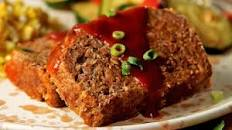

Taco Meatloaf

Description
This is one of my favorite recipes that my mom always used to make as a
kid. It is now a recipe that I taught my wife to make and she makes it for
my family all the time now. It is awesome to see part of my childhood
being passed on to my children.
Ingredients
- 1 lb. Ground Beef
- 1 packet Taco Seasoning
- 1 Large bottle of Taco Sauce
- 1/2 cup shredded cheese
- 1 egg
- Breadcrumbs
Steps
- Preheat oven to 375
-
Mix ground beef, taco seasoning, 1/2 the bottle of taco sauce, cheese,
and egg into large mixing bowl
- Add breadcrumbs and mix until mixture sticks together and is firm
- Place mixture into a loaf pan
- Pour other 1/2 of taco sauce bottle over the mixture
- Bake for 1 - 1.5 hours